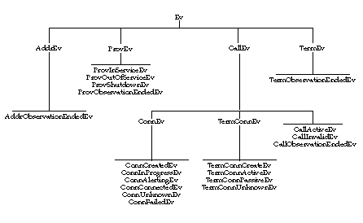

public interface Ev
Ev interface is the parent of all JTAPI event interfaces.
All JTAPI event interfaces extend this interface, either directly or
indirectly. Event interfaces within each JTAPI package are organized in a
hierarchical fashion. The architecture of the core package event hierarchy
is described later.
The JTAPI event system notifies applications when changes in various JTAPI object occur. Each individual change in an object is represented by an event sent to the appropriate observer. Because several changes may happen to an object at once, events are delivered as a batch. A batch of events represents a series of events and changes to the call model which happened exactly at the same time. For this reason, events are delivered to observers as arrays.
Ev.getID() method returns this identification number for each
event. The actual event identification integer is defined in each of the
specific event interfaces. Each event interface must carry a unique id.
Ev.getCause() method returns this cause value. The different
types of cause values are also defined in this interface.
Ev interface. Directly extending this
interface are those events interfaces for each object which supports an
observer: ProvEv, CallEv, AddrEv,
and TermEv.
Since Connection and TerminalConnection events are reported via the
CallObserver interface, the ConnEv and
TermConnEv interfaces extends the CallEv
interface.
The following diagram illustrates the complete core package event structure.

Ev.getMetaCode() method returns the meta code for
the event. Events are grouped together using meta codes to provide a
higher-level description of an update to the call model. Since events
represent singular changes in one particular object in the call model, it
may be difficult for the application to infer a higher-level interpretation
of several of these singular events. Meta codes exist on events to assist
the application in this regard.
Events which belong to the same higher-level action and contain the same
meta code are reported consecutively in an event batch sent to an observer.
In fact, multiple meta code grouping of events may exist in a single
event batch. In that case, the Ev.isNewMetaEvent() method is
used to indicate the beginning of a new meta code event grouping. This
method also indicates whether a meta code grouping exists across event
batch boundaries. That is, events belonging to the same meta code grouping
may be delivered in two contiguous event batches.
There are five types of meta codes which pertain to individual calls, and two which pertain to a mutli-call action, and two miscellaneous meta codes. The five meta codes which pertain to individual calls are:
| Ev.META_CALL_STARTING | Indicates that a new active call has been presented to the application, either by an application creating a call and performing an action on it, or by an incoming call to an object being observed by the application. |
| Ev.META_CALL_PROGRESS |
Indicates that the objects belonging to a call have changed state, with the
exception of Connections moving to Connection.DISCONNECTED. For
example, when a remote party answers a telephone call and the corresponding
Connection moves into the Connection.CONNECTED state, this is
the meta code associated with the resulting batch of events.
|
| Ev.META_CALL_ADDING_PARTY |
Indicates that a party has been added to the call. A "party" corresponds
to a Connection being added. Note that if a TerminalConnection is added, it
carries a meta code of Ev.META_CALL_PROGRESS.
|
| Ev.META_CALL_REMOVING_PARTY |
Indicates that a party (i.e. Connection) has been removed from the call by
moving into the Connection.DISCONNECTED state.
|
| Ev.META_CALL_ENDING |
Indicates that an entire telephone call has ended, which implies the call
has moved into the Call.INVALID state and all of its
Connections have moved into the Connection.DISCONNECTED state.
|
| Ev.META_CALL_MERGING | Indicates that a party has moved from one call to another as part of the two calls merging. A common example is when two telephone calls are conferenced. |
| Ev.META_CALL_TRANSFERRING |
Indicates that a party has moved from one call to another as part of one
call being transferred to another. The differs from
Ev.META_CALL_MERGING because a common party leaves both calls.
|
| Ev.META_SNAPSHOT | Indicates that the sequence of events are part of a "snapshot" given to the application to bring it up-to-date with the current state of the call model. |
| Ev.META_UNKNOWN | Indicates that the meta code is unknown for the event. |
| Modifier and Type | Field and Description |
|---|---|
static int |
CAUSE_CALL_CANCELLED
Cause code indicating the user has terminated call without going on-hook.
|
static int |
CAUSE_DEST_NOT_OBTAINABLE
Cause code indicating the destination is not available.
|
static int |
CAUSE_INCOMPATIBLE_DESTINATION
Cause code indicating that a call has encountered an incompatible
destination.
|
static int |
CAUSE_LOCKOUT
Cause code indicating that a call encountered inter-digit timeout while
dialing.
|
static int |
CAUSE_NETWORK_CONGESTION
Cause code indicating call encountered network congestion.
|
static int |
CAUSE_NETWORK_NOT_OBTAINABLE
Cause code indicating call could not reach a destination network.
|
static int |
CAUSE_NEW_CALL
Cause code indicating that a new call.
|
static int |
CAUSE_NORMAL
Cause code indicating normal operation
|
static int |
CAUSE_RESOURCES_NOT_AVAILABLE
Cause code indicating resources were not available.
|
static int |
CAUSE_SNAPSHOT
Cause code indicating that the event is part of a snapshot of the current
state of the call.
|
static int |
CAUSE_UNKNOWN
Cause code indicating the cause was unknown
|
static int |
META_CALL_ADDITIONAL_PARTY
Meta code description for the addition of a party to call.
|
static int |
META_CALL_ENDING
Meta code description for the entire call ending.
|
static int |
META_CALL_MERGING
Meta code description for an action of merging two calls.
|
static int |
META_CALL_PROGRESS
Meta code description for the progress of a call.
|
static int |
META_CALL_REMOVING_PARTY
Meta code description for a party leaving the call.
|
static int |
META_CALL_STARTING
Meta code description for the initiation or starting of a call.
|
static int |
META_CALL_TRANSFERRING
Meta code description for an action of transferring one call to another.
|
static int |
META_SNAPSHOT
Meta code description for a snapshot of events.
|
static int |
META_UNKNOWN
Meta code is unknown.
|
| Modifier and Type | Method and Description |
|---|---|
int |
getCause()
Returns the cause associated with this event.
|
int |
getID()
Returns the id of event.
|
int |
getMetaCode()
Returns the meta code associated with this event.
|
java.lang.Object |
getObserved()
Deprecated.
Since JTAPI v1.2 This interface no longer needs to supply this
information and may return null.
|
boolean |
isNewMetaEvent()
Returns true when this event is the start of a meta code group.
|
static final int CAUSE_NORMAL
static final int CAUSE_UNKNOWN
static final int CAUSE_CALL_CANCELLED
static final int CAUSE_DEST_NOT_OBTAINABLE
static final int CAUSE_INCOMPATIBLE_DESTINATION
static final int CAUSE_LOCKOUT
static final int CAUSE_NEW_CALL
static final int CAUSE_RESOURCES_NOT_AVAILABLE
static final int CAUSE_NETWORK_CONGESTION
static final int CAUSE_NETWORK_NOT_OBTAINABLE
static final int CAUSE_SNAPSHOT
static final int META_CALL_STARTING
static final int META_CALL_PROGRESS
static final int META_CALL_ADDITIONAL_PARTY
static final int META_CALL_REMOVING_PARTY
Connection.DISCONNECTED
state.static final int META_CALL_ENDING
Call.INVALID, all of the Connections
moving to the Connection.DISCONNECTED state.static final int META_CALL_MERGING
static final int META_CALL_TRANSFERRING
static final int META_SNAPSHOT
static final int META_UNKNOWN
int getCause()
int getMetaCode()
boolean isNewMetaEvent()
int getID()
java.lang.Object getObserved()
Note:Implementation need no longer supply this
information. The CallObsevationEndedEv.getObservedObject()
method has been added which returns related information. This method may
return null in JTAPI v1.2 and later.
Copyright © 2009 Avaya All Rights Reserved.